Ejericio 4 - EDA#
import warnings
warnings.filterwarnings('ignore')
import pandas as pd
df_fd= pd.read_csv('C:\\Users\\Andres\\Downloads\\train_transaction_new.csv', sep=",")
df_fd.head()
| TransactionID | isFraud | TransactionDT | TransactionAmt | ProductCD | card1 | card2 | card3 | card4 | card5 | ... | V330 | V331 | V332 | V333 | V334 | V335 | V336 | V337 | V338 | V339 | |
|---|---|---|---|---|---|---|---|---|---|---|---|---|---|---|---|---|---|---|---|---|---|
| 0 | 2987000 | 0 | 86400 | 68.5 | W | 13926 | NaN | 150.0 | discover | 142.0 | ... | NaN | NaN | NaN | NaN | NaN | NaN | NaN | NaN | NaN | NaN |
| 1 | 2987001 | 0 | 86401 | 29.0 | W | 2755 | 404.0 | 150.0 | mastercard | 102.0 | ... | NaN | NaN | NaN | NaN | NaN | NaN | NaN | NaN | NaN | NaN |
| 2 | 2987002 | 0 | 86469 | 59.0 | W | 4663 | 490.0 | 150.0 | visa | 166.0 | ... | NaN | NaN | NaN | NaN | NaN | NaN | NaN | NaN | NaN | NaN |
| 3 | 2987003 | 0 | 86499 | 50.0 | W | 18132 | 567.0 | 150.0 | mastercard | 117.0 | ... | NaN | NaN | NaN | NaN | NaN | NaN | NaN | NaN | NaN | NaN |
| 4 | 2987004 | 0 | 86506 | 50.0 | H | 4497 | 514.0 | 150.0 | mastercard | 102.0 | ... | 0.0 | 0.0 | 0.0 | 0.0 | 0.0 | 0.0 | 0.0 | 0.0 | 0.0 | 0.0 |
5 rows × 394 columns
df_identity= pd.read_csv('C:\\Users\\Andres\\Downloads\\train_identity_new.csv', sep=",")
df_fd.head()
| TransactionID | isFraud | TransactionDT | TransactionAmt | ProductCD | card1 | card2 | card3 | card4 | card5 | ... | V330 | V331 | V332 | V333 | V334 | V335 | V336 | V337 | V338 | V339 | |
|---|---|---|---|---|---|---|---|---|---|---|---|---|---|---|---|---|---|---|---|---|---|
| 0 | 2987000 | 0 | 86400 | 68.5 | W | 13926 | NaN | 150.0 | discover | 142.0 | ... | NaN | NaN | NaN | NaN | NaN | NaN | NaN | NaN | NaN | NaN |
| 1 | 2987001 | 0 | 86401 | 29.0 | W | 2755 | 404.0 | 150.0 | mastercard | 102.0 | ... | NaN | NaN | NaN | NaN | NaN | NaN | NaN | NaN | NaN | NaN |
| 2 | 2987002 | 0 | 86469 | 59.0 | W | 4663 | 490.0 | 150.0 | visa | 166.0 | ... | NaN | NaN | NaN | NaN | NaN | NaN | NaN | NaN | NaN | NaN |
| 3 | 2987003 | 0 | 86499 | 50.0 | W | 18132 | 567.0 | 150.0 | mastercard | 117.0 | ... | NaN | NaN | NaN | NaN | NaN | NaN | NaN | NaN | NaN | NaN |
| 4 | 2987004 | 0 | 86506 | 50.0 | H | 4497 | 514.0 | 150.0 | mastercard | 102.0 | ... | 0.0 | 0.0 | 0.0 | 0.0 | 0.0 | 0.0 | 0.0 | 0.0 | 0.0 | 0.0 |
5 rows × 394 columns
df= pd.merge(df_fd, df_identity, on='TransactionID', how='left')
df.head()
| TransactionID | isFraud | TransactionDT | TransactionAmt | ProductCD | card1 | card2 | card3 | card4 | card5 | ... | id_31 | id_32 | id_33 | id_34 | id_35 | id_36 | id_37 | id_38 | DeviceType | DeviceInfo | |
|---|---|---|---|---|---|---|---|---|---|---|---|---|---|---|---|---|---|---|---|---|---|
| 0 | 2987000 | 0 | 86400 | 68.5 | W | 13926 | NaN | 150.0 | discover | 142.0 | ... | NaN | NaN | NaN | NaN | NaN | NaN | NaN | NaN | NaN | NaN |
| 1 | 2987001 | 0 | 86401 | 29.0 | W | 2755 | 404.0 | 150.0 | mastercard | 102.0 | ... | NaN | NaN | NaN | NaN | NaN | NaN | NaN | NaN | NaN | NaN |
| 2 | 2987002 | 0 | 86469 | 59.0 | W | 4663 | 490.0 | 150.0 | visa | 166.0 | ... | NaN | NaN | NaN | NaN | NaN | NaN | NaN | NaN | NaN | NaN |
| 3 | 2987003 | 0 | 86499 | 50.0 | W | 18132 | 567.0 | 150.0 | mastercard | 117.0 | ... | NaN | NaN | NaN | NaN | NaN | NaN | NaN | NaN | NaN | NaN |
| 4 | 2987004 | 0 | 86506 | 50.0 | H | 4497 | 514.0 | 150.0 | mastercard | 102.0 | ... | samsung browser 6.2 | 32.0 | 2220x1080 | match_status:2 | T | F | T | T | mobile | SAMSUNG SM-G892A Build/NRD90M |
5 rows × 434 columns
Unificamos los dos conjuntos de datos y obtenemos los primeros registros del dataframe donde se puede validar las variables en cada columna.
df.info()
<class 'pandas.core.frame.DataFrame'>
RangeIndex: 99999 entries, 0 to 99998
Columns: 434 entries, TransactionID to DeviceInfo
dtypes: float64(399), int64(4), object(31)
memory usage: 331.1+ MB
Se describe un DataFrame con 434 columnas y 99999 filas. Las columnas contienen datos de diferentes tipos, principalmente float64 (números decimales) y una columna de tipo objeto (posiblemente texto u otros datos no numéricos)
df.describe()
| TransactionID | isFraud | TransactionDT | TransactionAmt | card1 | card2 | card3 | card5 | addr1 | addr2 | ... | id_17 | id_18 | id_19 | id_20 | id_21 | id_22 | id_24 | id_25 | id_26 | id_32 | |
|---|---|---|---|---|---|---|---|---|---|---|---|---|---|---|---|---|---|---|---|---|---|
| count | 9.999900e+04 | 99999.00000 | 9.999900e+04 | 99999.000000 | 99999.000000 | 98645.000000 | 99996.000000 | 99474.000000 | 90962.000000 | 90962.000000 | ... | 39880.000000 | 12981.000000 | 39871.000000 | 39866.000000 | 1620.000000 | 1624.000000 | 1500.000000 | 1612.000000 | 1623.000000 | 29838.000000 |
| mean | 3.036999e+06 | 0.02561 | 1.135115e+06 | 130.743579 | 9878.453325 | 370.887972 | 153.236709 | 200.072039 | 291.414239 | 86.242156 | ... | 178.218029 | 13.978199 | 362.550074 | 383.387975 | 394.084568 | 15.523399 | 13.216667 | 326.617866 | 150.661738 | 26.329647 |
| std | 2.886737e+04 | 0.15797 | 5.733446e+05 | 206.025702 | 4933.557719 | 159.244484 | 11.151578 | 40.905338 | 103.077427 | 5.056896 | ... | 25.656110 | 1.479517 | 146.488112 | 155.157082 | 207.763730 | 6.056069 | 2.180113 | 104.043438 | 31.061028 | 3.655790 |
| min | 2.987000e+06 | 0.00000 | 8.640000e+04 | 0.292000 | 1001.000000 | 100.000000 | 100.000000 | 100.000000 | 100.000000 | 13.000000 | ... | 100.000000 | 11.000000 | 100.000000 | 100.000000 | 100.000000 | 12.000000 | 11.000000 | 100.000000 | 100.000000 | 0.000000 |
| 25% | 3.012000e+06 | 0.00000 | 6.537475e+05 | 45.000000 | 6019.000000 | 215.000000 | 150.000000 | 166.000000 | 204.000000 | 87.000000 | ... | 166.000000 | 13.000000 | 266.000000 | 222.000000 | 252.000000 | 14.000000 | 11.000000 | 272.000000 | 121.000000 | 24.000000 |
| 50% | 3.036999e+06 | 0.00000 | 1.189336e+06 | 75.000000 | 9653.000000 | 387.000000 | 150.000000 | 226.000000 | 299.000000 | 87.000000 | ... | 166.000000 | 13.000000 | 352.000000 | 391.000000 | 252.000000 | 14.000000 | 15.000000 | 321.000000 | 150.000000 | 24.000000 |
| 75% | 3.061998e+06 | 0.00000 | 1.643436e+06 | 135.950000 | 14290.000000 | 514.000000 | 150.000000 | 226.000000 | 330.000000 | 87.000000 | ... | 166.000000 | 15.000000 | 492.000000 | 521.000000 | 576.000000 | 14.000000 | 15.000000 | 381.000000 | 169.000000 | 32.000000 |
| max | 3.086998e+06 | 1.00000 | 2.006177e+06 | 4829.950000 | 18395.000000 | 600.000000 | 229.000000 | 237.000000 | 540.000000 | 102.000000 | ... | 229.000000 | 29.000000 | 671.000000 | 660.000000 | 853.000000 | 41.000000 | 25.000000 | 548.000000 | 216.000000 | 32.000000 |
8 rows × 403 columns
Se agrega la descripción estadística de los datos, donde se relaciona la cantidad de registros, la media, desv. estándar, míninmos, máximos y percentiles.
df.nunique()
TransactionID 99999
isFraud 2
TransactionDT 96143
TransactionAmt 6387
ProductCD 5
...
id_36 2
id_37 2
id_38 2
DeviceType 2
DeviceInfo 866
Length: 434, dtype: int64
Validamos la cantidad de registros únicos para cada variable.
df.isnull().sum()
TransactionID 0
isFraud 0
TransactionDT 0
TransactionAmt 0
ProductCD 0
...
id_36 59598
id_37 59598
id_38 59598
DeviceType 59716
DeviceInfo 63534
Length: 434, dtype: int64
(df.isnull().sum()/(len(df)))*100
TransactionID 0.000000
isFraud 0.000000
TransactionDT 0.000000
TransactionAmt 0.000000
ProductCD 0.000000
...
id_36 59.598596
id_37 59.598596
id_38 59.598596
DeviceType 59.716597
DeviceInfo 63.534635
Length: 434, dtype: float64
Se realiza un conteo de datos faltantes y se pueden identificar variables que tienen más de 60% de datos incompletos.
Depuramos el DataFrame eliminando las columnas que tengan datos nulos.
df = df[df.columns[df.isnull().mean() < 0.1]]
df.head()
| TransactionID | isFraud | TransactionDT | TransactionAmt | ProductCD | card1 | card2 | card3 | card4 | card5 | ... | V312 | V313 | V314 | V315 | V316 | V317 | V318 | V319 | V320 | V321 | |
|---|---|---|---|---|---|---|---|---|---|---|---|---|---|---|---|---|---|---|---|---|---|
| 0 | 2987000 | 0 | 86400 | 68.5 | W | 13926 | NaN | 150.0 | discover | 142.0 | ... | 0.0 | 0.0 | 0.0 | 0.0 | 0.0 | 117.0 | 0.0 | 0.0 | 0.0 | 0.0 |
| 1 | 2987001 | 0 | 86401 | 29.0 | W | 2755 | 404.0 | 150.0 | mastercard | 102.0 | ... | 0.0 | 0.0 | 0.0 | 0.0 | 0.0 | 0.0 | 0.0 | 0.0 | 0.0 | 0.0 |
| 2 | 2987002 | 0 | 86469 | 59.0 | W | 4663 | 490.0 | 150.0 | visa | 166.0 | ... | 0.0 | 0.0 | 0.0 | 0.0 | 0.0 | 0.0 | 0.0 | 0.0 | 0.0 | 0.0 |
| 3 | 2987003 | 0 | 86499 | 50.0 | W | 18132 | 567.0 | 150.0 | mastercard | 117.0 | ... | 135.0 | 0.0 | 0.0 | 0.0 | 50.0 | 1404.0 | 790.0 | 0.0 | 0.0 | 0.0 |
| 4 | 2987004 | 0 | 86506 | 50.0 | H | 4497 | 514.0 | 150.0 | mastercard | 102.0 | ... | 0.0 | 0.0 | 0.0 | 0.0 | 0.0 | 0.0 | 0.0 | 0.0 | 0.0 | 0.0 |
5 rows × 114 columns
Y se obtiene el siguiente df con una dimensión de (99999, 114)
df.shape
(99999, 114)
Realizamos un gráfico de distribución para identificar como se encuentran categorizados los datos de fraude, nos damos cuenta que la gran cantidad de datos se encuentra clasificado como ‘No Fraude’. El 97,4% de los datos está categorizado como No fraude y el 2.5% como fraude.
import numpy as np
import seaborn as sns
import matplotlib.pyplot as plt
ax = sns.countplot(x = 'isFraud', data = df, palette=["#3f3e6fd1", "#85c6a9"])
plt.xticks(np.arange(2), ['0', '1'])
plt.title('Fraud Detection (training dataset)',fontsize= 14)
plt.xlabel('Class')
plt.ylabel('Distribución');
Se realiza correlación entre las variables para identificar aquellas que tienen independencia.
import matplotlib.pyplot as plt
df_fnumeric = df.select_dtypes(include=['float64', 'int64'])
correlacionmatriz = df_fnumeric.corr()
umbral = 0.1
variablesindependientes = []
for columna in correlacionmatriz.columns:
correlacionesind = correlacionmatriz[correlacionmatriz[columna].abs() < umbral][columna]
if len(correlacionesind) > 1:
variablesindependientes.append(columna)
print("variables Independientes:")
print(variablesindependientes)
variables Independientes:
['TransactionID', 'isFraud', 'TransactionDT', 'TransactionAmt', 'card1', 'card2', 'card3', 'card5', 'addr1', 'addr2', 'C1', 'C2', 'C3', 'C4', 'C5', 'C6', 'C7', 'C8', 'C9', 'C10', 'C11', 'C12', 'C13', 'C14', 'D1', 'V95', 'V96', 'V97', 'V98', 'V99', 'V100', 'V101', 'V102', 'V103', 'V104', 'V105', 'V106', 'V108', 'V109', 'V110', 'V111', 'V112', 'V113', 'V114', 'V115', 'V116', 'V117', 'V118', 'V119', 'V120', 'V121', 'V122', 'V123', 'V124', 'V125', 'V126', 'V127', 'V128', 'V129', 'V130', 'V131', 'V132', 'V133', 'V134', 'V135', 'V136', 'V137', 'V279', 'V280', 'V281', 'V282', 'V283', 'V284', 'V285', 'V286', 'V287', 'V288', 'V289', 'V290', 'V291', 'V292', 'V293', 'V294', 'V295', 'V296', 'V297', 'V298', 'V299', 'V300', 'V301', 'V302', 'V303', 'V304', 'V305', 'V306', 'V307', 'V308', 'V309', 'V310', 'V311', 'V312', 'V313', 'V314', 'V315', 'V316', 'V317', 'V318', 'V319', 'V320', 'V321']
Se crean dos variables para la variable respuesta y las varibales independientes con el fin de realizar un análisis mas detallado:
variablerpta = 'isFraud'
variablesindp = ['TransactionID','TransactionDT', 'card1', 'card3','D1','V95']
Histograma de variable respuesta:
import pandas as pd
import matplotlib.pyplot as plt
import seaborn as sns
plt.figure(figsize=(8, 6))
sns.histplot(df[variablerpta], bins=10, kde=True, color='darkblue', edgecolor='black')
plt.xlabel('IsFraud')
plt.ylabel('Frecuencia')
plt.title('Histograma con Curva de Densidad de IsFraud')
plt.show()
data = pd.melt(df, id_vars = "isFraud",value_vars = ['TransactionID','TransactionDT'])
sns.set(font_scale=1.8)
plt.figure(figsize = (20,10))
sns.boxplot(x = "value", y = "variable", hue="isFraud",data= data);
Se aprecia la variable TransactionDT, tiene tiene la clasificación muy parecida tanto para 0 - No fraude, como 1 - Fraude. Los datos de TransactionID, tienen el mismo comportamiento.
data = pd.melt(df, id_vars = "isFraud",value_vars = ['card3','D1','V95'])
sns.set(font_scale=1.8)
plt.figure(figsize = (20,10))
sns.boxplot(x = "value", y = "variable", hue="isFraud",data= data);

Cada variable tiene valores atípicos, fuera de su rango mín y máx. La variable D1 es la que más valores atípicos tiene.
import seaborn as sns
import matplotlib.pyplot as plt
num_cols = df.select_dtypes(include=['float64', 'int64']).columns
sns.set(font_scale=1.4)
for col in variablesindp:
print('Column: ', col)
print('Skew:', round(df[col].skew(), 2))
print('Kurtosis: ', round(df[col].kurtosis(), 2))
plt.figure(figsize = (14, 6))
plt.subplot(1, 2, 1)
df[col].hist(grid=False, color='skyblue')
plt.title('Histograma')
plt.subplot(1, 2, 2)
sns.boxplot(x=df[col], color='skyblue')
plt.title('Boxplot')
plt.show()
Column: TransactionID
Skew: 0.0
Kurtosis: -1.2

Column: TransactionDT
Skew: -0.19
Kurtosis: -1.22
Column: card1
Skew: -0.03
Kurtosis: -1.15
Column: card3
Skew: 2.11
Kurtosis: 5.94

Column: D1
Skew: 1.92
Kurtosis: 2.5
Column: V95
Skew: 8.49
Kurtosis: 126.7
TransactionID: La asimetría cercana a cero (-0.0) sugiere que la distribución de los datos de ‘TransactionID’ es aproximadamente simétrica, lo que significa que los valores están distribuidos de manera bastante uniforme alrededor de la media. La curtosis (-1.2) es menor que la curtosis de una distribución normal estándar, lo que indica que la distribución de ‘TransactionID’ es un poco menos puntiaguda (menos picuda) que una distribución normal.
TransactionDT: La asimetría de 0.13 sugiere que la distribución de los datos de ‘TransactionDT’ tiene una ligera asimetría positiva, lo que significa que la cola derecha de la distribución puede ser un poco más larga que la cola izquierda. La curtosis de -1.23 indica que la distribución es un poco menos puntiaguda que una distribución normal estándar.
card1: La asimetría cercana a cero (-0.04) sugiere que la distribución de los datos de ‘card1’ es casi simétrica, es decir, los valores están distribuidos de manera uniforme alrededor de la media. La curtosis de -1.14 indica que la distribución es un poco menos puntiaguda que una distribución normal estándar.
card3: La asimetría (skew) de 2.02 sugiere una asimetría positiva pronunciada en la distribución de ‘card3’, lo que significa que la cola derecha de la distribución es mucho más larga que la cola izquierda. La curtosis de 6.32 indica una distribución muy puntiaguda y con colas pesadas en comparación con una distribución normal estándar.
D1 La asimetría (skew) de 1.81 sugiere una fuerte asimetría positiva en la distribución de ‘D1’, lo que indica que la cola derecha de la distribución es mucho más larga que la cola izquierda. La curtosis de 2.2 indica que la distribución es puntiaguda en comparación con una distribución normal estándar, pero no tan puntiaguda como ‘card3’.
Análisis Bi Variado#
bivar = [('C1', 'isFraud'), ('C11','isFraud'),('C14','isFraud'),('V95','isFraud'),('V100','isFraud')]
for pair in bivar:
plt.figure(figsize=(10, 6))
sns.scatterplot(data=df, x=pair[0], y=pair[1], color='skyblue')
plt.title(f'Scatterplot de {pair[0]} vs {pair[1]}')
plt.xlabel(pair[0])
plt.ylabel(pair[1])
plt.show()
plt.figure(figsize=(10, 6))
sns.regplot(data=df, x=pair[0], y=pair[1], color= 'skyblue', line_kws={"color":"blue"})
plt.title(f'Regplot de {pair[0]} vs {pair[1]}')
plt.xlabel(pair[0])
plt.ylabel(pair[1])
plt.show()
 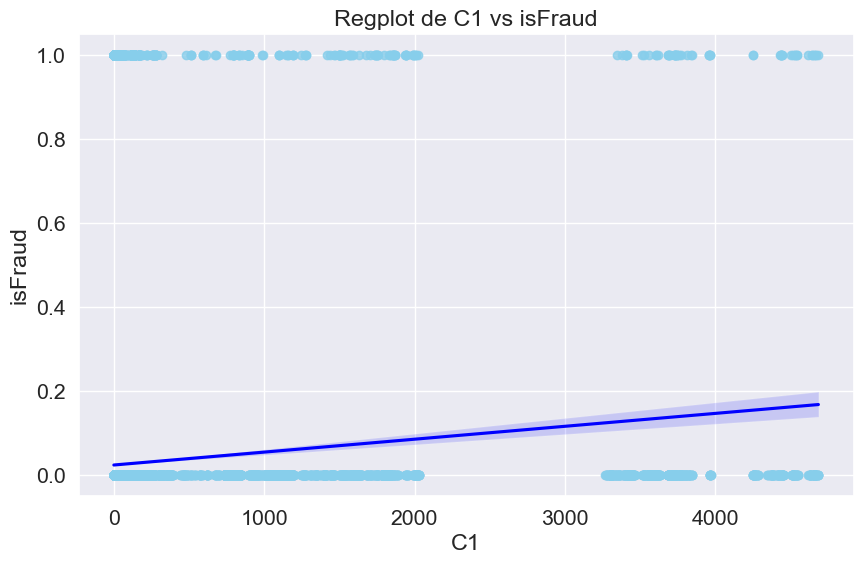
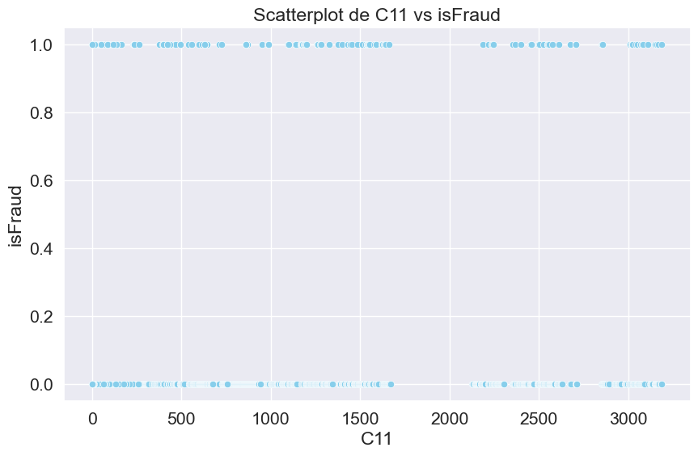
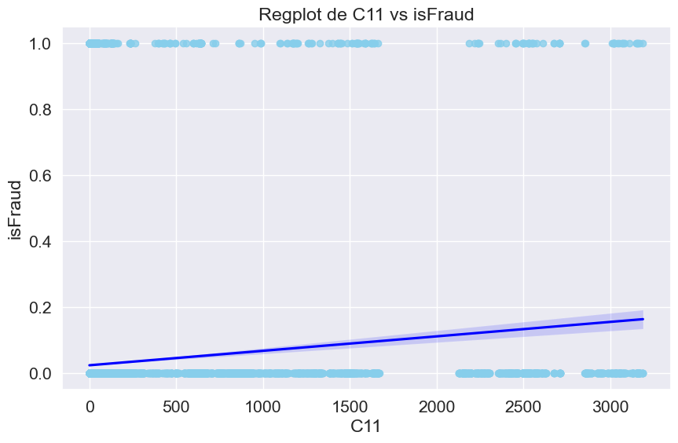
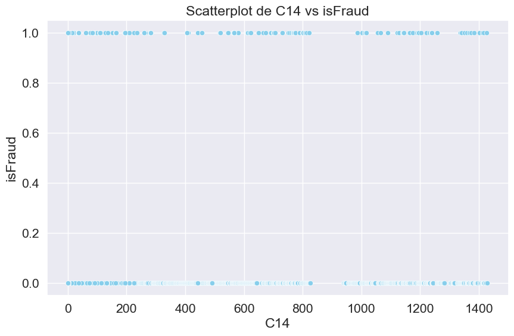
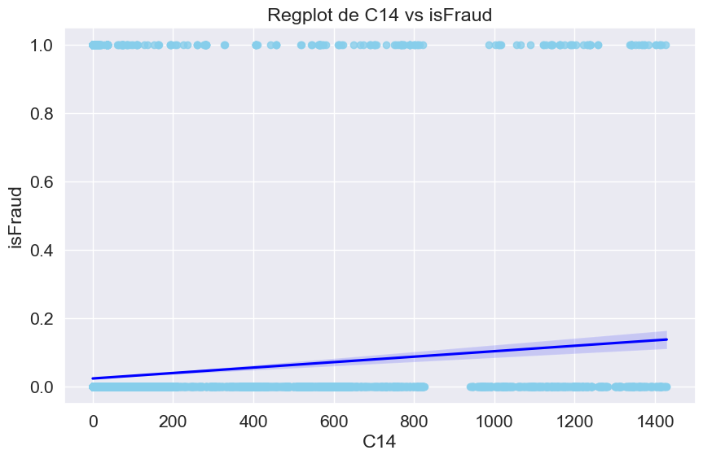
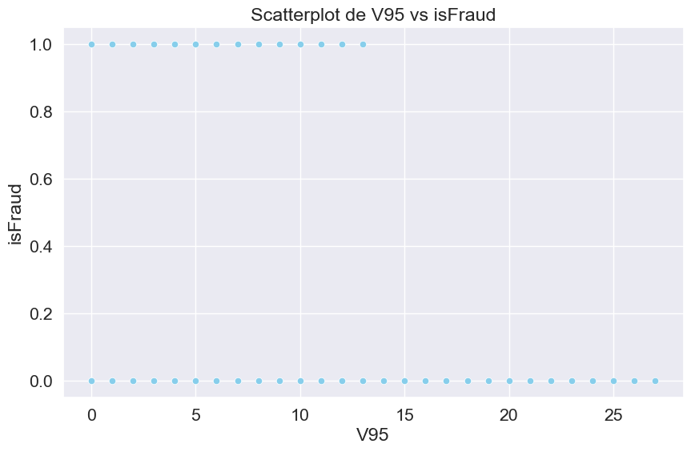
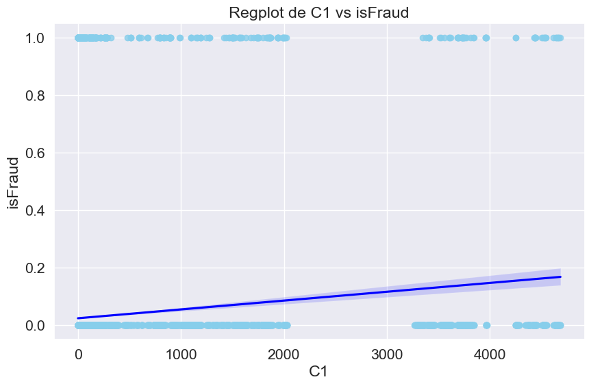
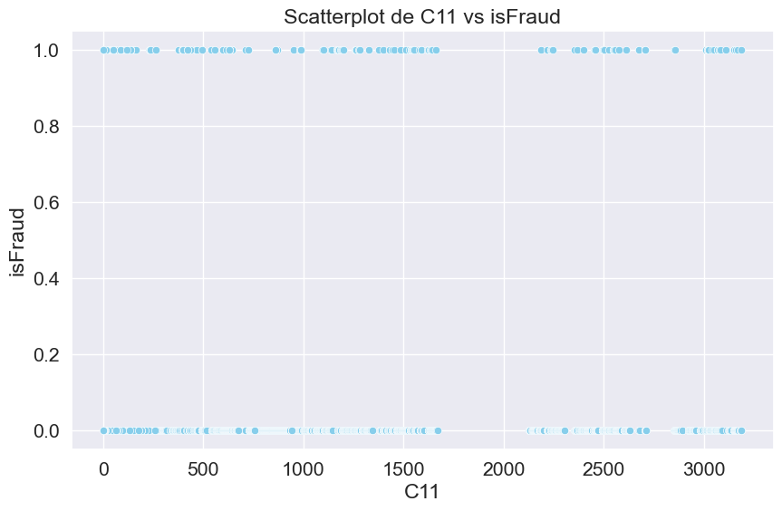
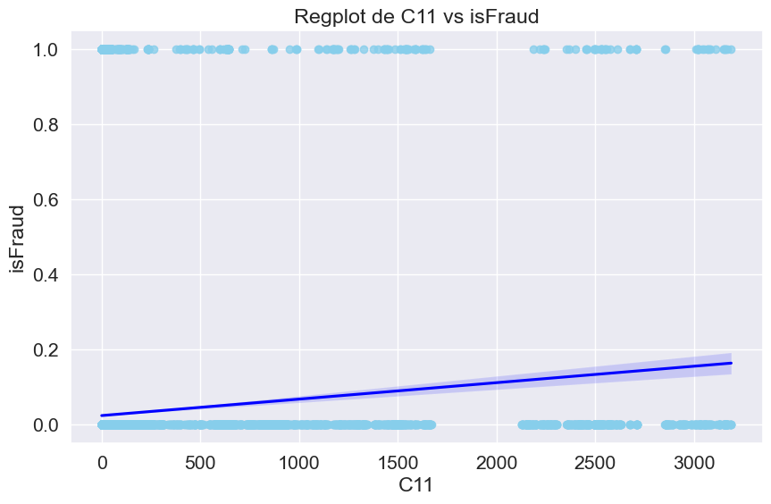
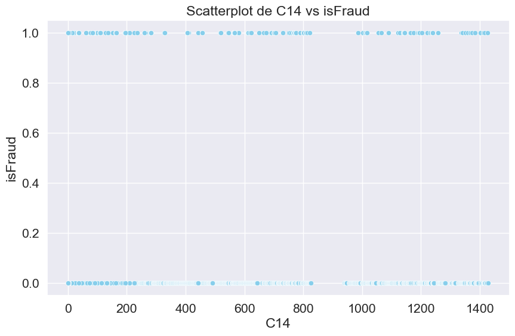
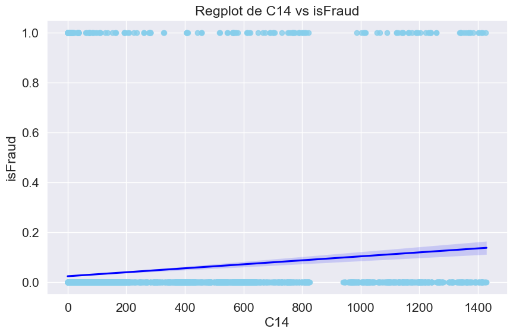
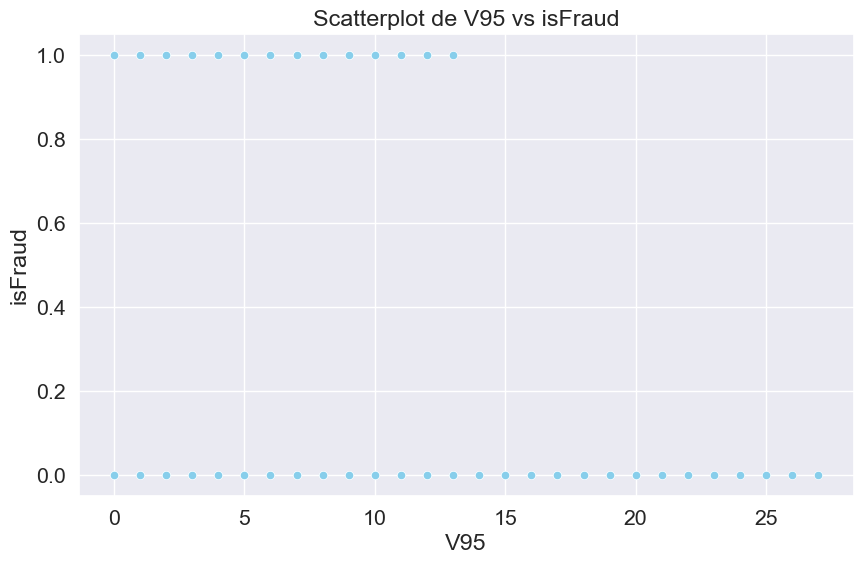
---------------------------------------------------------------------------
KeyboardInterrupt Traceback (most recent call last)
Cell In[19], line 12
9 plt.show()
11 plt.figure(figsize=(10, 6))
---> 12 sns.regplot(data=df, x=pair[0], y=pair[1], color= 'skyblue', line_kws={"color":"blue"})
13 plt.title(f'Regplot de {pair[0]} vs {pair[1]}')
14 plt.xlabel(pair[0])
File ~\miniconda3\envs\ml_venv\lib\site-packages\seaborn\regression.py:759, in regplot(data, x, y, x_estimator, x_bins, x_ci, scatter, fit_reg, ci, n_boot, units, seed, order, logistic, lowess, robust, logx, x_partial, y_partial, truncate, dropna, x_jitter, y_jitter, label, color, marker, scatter_kws, line_kws, ax)
757 scatter_kws["marker"] = marker
758 line_kws = {} if line_kws is None else copy.copy(line_kws)
--> 759 plotter.plot(ax, scatter_kws, line_kws)
760 return ax
File ~\miniconda3\envs\ml_venv\lib\site-packages\seaborn\regression.py:368, in _RegressionPlotter.plot(self, ax, scatter_kws, line_kws)
365 self.scatterplot(ax, scatter_kws)
367 if self.fit_reg:
--> 368 self.lineplot(ax, line_kws)
370 # Label the axes
371 if hasattr(self.x, "name"):
File ~\miniconda3\envs\ml_venv\lib\site-packages\seaborn\regression.py:413, in _RegressionPlotter.lineplot(self, ax, kws)
411 """Draw the model."""
412 # Fit the regression model
--> 413 grid, yhat, err_bands = self.fit_regression(ax)
414 edges = grid[0], grid[-1]
416 # Get set default aesthetics
File ~\miniconda3\envs\ml_venv\lib\site-packages\seaborn\regression.py:219, in _RegressionPlotter.fit_regression(self, ax, x_range, grid)
217 yhat, yhat_boots = self.fit_logx(grid)
218 else:
--> 219 yhat, yhat_boots = self.fit_fast(grid)
221 # Compute the confidence interval at each grid point
222 if ci is None:
File ~\miniconda3\envs\ml_venv\lib\site-packages\seaborn\regression.py:240, in _RegressionPlotter.fit_fast(self, grid)
237 if self.ci is None:
238 return yhat, None
--> 240 beta_boots = algo.bootstrap(X, y,
241 func=reg_func,
242 n_boot=self.n_boot,
243 units=self.units,
244 seed=self.seed).T
245 yhat_boots = grid.dot(beta_boots).T
246 return yhat, yhat_boots
File ~\miniconda3\envs\ml_venv\lib\site-packages\seaborn\algorithms.py:96, in bootstrap(*args, **kwargs)
94 boot_dist = []
95 for i in range(int(n_boot)):
---> 96 resampler = integers(0, n, n, dtype=np.intp) # intp is indexing dtype
97 sample = [a.take(resampler, axis=0) for a in args]
98 boot_dist.append(f(*sample, **func_kwargs))
KeyboardInterrupt:
Con el análisis bivariado podemos comprender cómo se relacionan las variables entre sí y la relación entre las variables independientes presentes en el conjunto de datos y para identificar patrones de tendencia lineal.
La parte principal del gráfico es un conjunto de puntos dispersos en un plano cartesiano. Cada punto representa un par de valores de dos variables diferentes que estás comparando.La línea que atraviesa los puntos en el gráfico es la línea de regresión. Esta línea se ajusta a los datos de manera que represente la mejor estimación de la relación entre las dos variables. En un gráfico de dispersión, la línea de regresión se utiliza para modelar una posible tendencia lineal en los datos. La dirección de la línea de regresión indica si hay una relación positiva o negativa entre las dos variables. Si la línea sube hacia la derecha, hay una correlación positiva, lo que significa que cuando una variable aumenta, la otra también tiende a aumentar. Si la línea desciende hacia la derecha, hay una correlación negativa, lo que significa que cuando una variable aumenta, la otra tiende a disminuir.
One- Hot Enconding#
Se identifican todas las variables Categoricas dentro del conjunto de datos:
df.info()
<class 'pandas.core.frame.DataFrame'>
RangeIndex: 99999 entries, 0 to 99998
Columns: 114 entries, TransactionID to V321
dtypes: float64(107), int64(4), object(3)
memory usage: 87.0+ MB
variables_categoricas = []
for columna in df.columns:
if df[columna].dtype == 'object' or df[columna].dtype.name == 'category':
variables_categoricas.append(columna)
df_encoded = pd.get_dummies(df, columns=variables_categoricas)
df_encoded.info()
<class 'pandas.core.frame.DataFrame'>
RangeIndex: 99999 entries, 0 to 99998
Columns: 124 entries, TransactionID to card6_debit or credit
dtypes: bool(13), float64(107), int64(4)
memory usage: 85.9 MB
Imputación de datos faltantes con la media#
from sklearn.impute import SimpleImputer
imputer = SimpleImputer(strategy='mean')
df_encoded_imputed = imputer.fit_transform(df_encoded)
df_imputed = pd.DataFrame(df_encoded_imputed, columns=df_encoded.columns)
df_imputed.head()
| TransactionID | isFraud | TransactionDT | TransactionAmt | card1 | card2 | card3 | card5 | addr1 | addr2 | ... | ProductCD_S | ProductCD_W | card4_american express | card4_discover | card4_mastercard | card4_visa | card6_charge card | card6_credit | card6_debit | card6_debit or credit | |
|---|---|---|---|---|---|---|---|---|---|---|---|---|---|---|---|---|---|---|---|---|---|
| 0 | 2987000.0 | 0.0 | 86400.0 | 68.5 | 13926.0 | 370.887972 | 150.0 | 142.0 | 315.0 | 87.0 | ... | 0.0 | 1.0 | 0.0 | 1.0 | 0.0 | 0.0 | 0.0 | 1.0 | 0.0 | 0.0 |
| 1 | 2987001.0 | 0.0 | 86401.0 | 29.0 | 2755.0 | 404.000000 | 150.0 | 102.0 | 325.0 | 87.0 | ... | 0.0 | 1.0 | 0.0 | 0.0 | 1.0 | 0.0 | 0.0 | 1.0 | 0.0 | 0.0 |
| 2 | 2987002.0 | 0.0 | 86469.0 | 59.0 | 4663.0 | 490.000000 | 150.0 | 166.0 | 330.0 | 87.0 | ... | 0.0 | 1.0 | 0.0 | 0.0 | 0.0 | 1.0 | 0.0 | 0.0 | 1.0 | 0.0 |
| 3 | 2987003.0 | 0.0 | 86499.0 | 50.0 | 18132.0 | 567.000000 | 150.0 | 117.0 | 476.0 | 87.0 | ... | 0.0 | 1.0 | 0.0 | 0.0 | 1.0 | 0.0 | 0.0 | 0.0 | 1.0 | 0.0 |
| 4 | 2987004.0 | 0.0 | 86506.0 | 50.0 | 4497.0 | 514.000000 | 150.0 | 102.0 | 420.0 | 87.0 | ... | 0.0 | 0.0 | 0.0 | 0.0 | 1.0 | 0.0 | 0.0 | 1.0 | 0.0 | 0.0 |
5 rows × 124 columns
Como el VIF no me terminó de cargar con todas la variables, se procede a realizar un análisis de correlación para eliminar las variables que estén más relacionadas. Se establece un umbral del 70%

import pandas as pd
# Crear una copia del DataFrame original
df = df_imputed.copy()
# Obtener la matriz de correlación
correlation_matrix = df_imputed.corr()
# Obtener una lista de pares de columnas con alta correlación
high_correlation_pairs = []
for i in range(len(correlation_matrix.columns)):
for j in range(i):
if abs(correlation_matrix.iloc[i, j]) >= 0.7:
high_correlation_pairs.append((correlation_matrix.columns[i], correlation_matrix.columns[j]))
# Crear una lista de columnas para eliminar
columns_to_remove = set()
for pair in high_correlation_pairs:
columns_to_remove.add(pair[0]) # Agregar la primera columna del par
columns_to_remove.add(pair[1]) # Agregar la segunda columna del par
# Eliminar las columnas de la lista 'columns_to_remove' del DataFrame
df.drop(columns=columns_to_remove, inplace=True)
df.head()
| isFraud | TransactionAmt | card1 | card2 | card5 | addr1 | addr2 | C3 | D1 | V107 | ... | V283 | V286 | V305 | ProductCD_H | ProductCD_R | ProductCD_S | card4_american express | card4_discover | card6_charge card | card6_debit or credit | |
|---|---|---|---|---|---|---|---|---|---|---|---|---|---|---|---|---|---|---|---|---|---|
| 0 | 0.0 | 68.5 | 13926.0 | 370.887972 | 142.0 | 315.0 | 87.0 | 0.0 | 14.0 | 1.0 | ... | 1.0 | 0.0 | 1.0 | 0.0 | 0.0 | 0.0 | 0.0 | 1.0 | 0.0 | 0.0 |
| 1 | 0.0 | 29.0 | 2755.0 | 404.000000 | 102.0 | 325.0 | 87.0 | 0.0 | 0.0 | 1.0 | ... | 1.0 | 0.0 | 1.0 | 0.0 | 0.0 | 0.0 | 0.0 | 0.0 | 0.0 | 0.0 |
| 2 | 0.0 | 59.0 | 4663.0 | 490.000000 | 166.0 | 330.0 | 87.0 | 0.0 | 0.0 | 1.0 | ... | 1.0 | 0.0 | 1.0 | 0.0 | 0.0 | 0.0 | 0.0 | 0.0 | 0.0 | 0.0 |
| 3 | 0.0 | 50.0 | 18132.0 | 567.000000 | 117.0 | 476.0 | 87.0 | 0.0 | 112.0 | 1.0 | ... | 0.0 | 0.0 | 1.0 | 0.0 | 0.0 | 0.0 | 0.0 | 0.0 | 0.0 | 0.0 |
| 4 | 0.0 | 50.0 | 4497.0 | 514.000000 | 102.0 | 420.0 | 87.0 | 0.0 | 0.0 | 1.0 | ... | 1.0 | 0.0 | 1.0 | 1.0 | 0.0 | 0.0 | 0.0 | 0.0 | 0.0 | 0.0 |
5 rows × 22 columns
VIF#
from statsmodels.stats.outliers_influence import variance_inflation_factor
vif_f= pd.DataFrame()
vif_f["Variable"] = df.columns
vif_f["VIF"] = [variance_inflation_factor(df.values, i) for i in range(df.shape[1])]
variables5alto = vif_f[vif_f["VIF"] >= 5]["Variable"]
variables5alto = variables5alto.tolist()
df = df.drop(columns=variables5alto)
df.head()
| isFraud | TransactionAmt | card1 | card2 | card5 | addr1 | addr2 | C3 | D1 | V281 | ... | V283 | V286 | V305 | ProductCD_H | ProductCD_R | ProductCD_S | card4_american express | card4_discover | card6_charge card | card6_debit or credit | |
|---|---|---|---|---|---|---|---|---|---|---|---|---|---|---|---|---|---|---|---|---|---|
| 0 | 0.0 | 68.5 | 13926.0 | 370.887972 | 142.0 | 315.0 | 87.0 | 0.0 | 14.0 | 0.0 | ... | 1.0 | 0.0 | 1.0 | 0.0 | 0.0 | 0.0 | 0.0 | 1.0 | 0.0 | 0.0 |
| 1 | 0.0 | 29.0 | 2755.0 | 404.000000 | 102.0 | 325.0 | 87.0 | 0.0 | 0.0 | 0.0 | ... | 1.0 | 0.0 | 1.0 | 0.0 | 0.0 | 0.0 | 0.0 | 0.0 | 0.0 | 0.0 |
| 2 | 0.0 | 59.0 | 4663.0 | 490.000000 | 166.0 | 330.0 | 87.0 | 0.0 | 0.0 | 0.0 | ... | 1.0 | 0.0 | 1.0 | 0.0 | 0.0 | 0.0 | 0.0 | 0.0 | 0.0 | 0.0 |
| 3 | 0.0 | 50.0 | 18132.0 | 567.000000 | 117.0 | 476.0 | 87.0 | 0.0 | 112.0 | 0.0 | ... | 0.0 | 0.0 | 1.0 | 0.0 | 0.0 | 0.0 | 0.0 | 0.0 | 0.0 | 0.0 |
| 4 | 0.0 | 50.0 | 4497.0 | 514.000000 | 102.0 | 420.0 | 87.0 | 0.0 | 0.0 | 0.0 | ... | 1.0 | 0.0 | 1.0 | 1.0 | 0.0 | 0.0 | 0.0 | 0.0 | 0.0 | 0.0 |
5 rows × 21 columns
df.info()
<class 'pandas.core.frame.DataFrame'>
RangeIndex: 99999 entries, 0 to 99998
Data columns (total 21 columns):
# Column Non-Null Count Dtype
--- ------ -------------- -----
0 isFraud 99999 non-null float64
1 TransactionAmt 99999 non-null float64
2 card1 99999 non-null float64
3 card2 99999 non-null float64
4 card5 99999 non-null float64
5 addr1 99999 non-null float64
6 addr2 99999 non-null float64
7 C3 99999 non-null float64
8 D1 99999 non-null float64
9 V281 99999 non-null float64
10 V282 99999 non-null float64
11 V283 99999 non-null float64
12 V286 99999 non-null float64
13 V305 99999 non-null float64
14 ProductCD_H 99999 non-null float64
15 ProductCD_R 99999 non-null float64
16 ProductCD_S 99999 non-null float64
17 card4_american express 99999 non-null float64
18 card4_discover 99999 non-null float64
19 card6_charge card 99999 non-null float64
20 card6_debit or credit 99999 non-null float64
dtypes: float64(21)
memory usage: 16.0 MB
Ejercicio 5 - Modelos de Clasificación#
Considere el conjunto de datos Fraud Detection. Implemente la versión de clasificación para cada uno de los modelos estudiados en clases, y prediga la variable respuesta isFraud. Construir una tabla de error que contenga las métricas usuales de clasificación: precission, recall, f1-score, AUC. Además, agregue matrices de confusión (ver confusion_matrix) y curvas ROC (ver plot_roc). Puede utilizar la librería GridSearchCV y Pipeline para evaluar cada modelo. Verifique que la validación cruzada seleccionada es la adecuada, y justifíquelo.Utilice la métrica AUC, para seleccionar el mejor modelo de clasificación (maximizar AUC). Los resultados deben estar registrados en una tabla de error (ver Tabla 1) que resuma cada score obtenido por modelo implementado.
Dividimos el conjunto de datos en dos partes:
Evaluaremos los datos de Training y test con los primeros 200.000 registros de nuestro Dataframe.
Los registros restantes se pueden utilizarán para evaluación de modelo.
from sklearn.model_selection import train_test_split
n = 200000
df2 = df.iloc[:n]
X = df2.drop('isFraud', axis=1)
y = df2['isFraud']
# Separamos el conjunto de datos en Train y Test
X_train, X_test, y_train, y_test = train_test_split(X, y, test_size=0.3, random_state=42)
Definimos los modelos a evaluar:
from sklearn.neighbors import KNeighborsClassifier
from sklearn.linear_model import Ridge, Lasso
from sklearn.naive_bayes import GaussianNB
import xgboost as xgb
from sklearn.svm import SVC
from sklearn.neural_network import MLPClassifier
knn = KNeighborsClassifier()
ridge = Ridge()
lasso = Lasso()
naiveBayes = GaussianNB()
#xgb = xgb.XGBClassifier()
#svm = SVC()
#mlp = MLPClassifier()
from sklearn.pipeline import Pipeline
from sklearn.preprocessing import StandardScaler
from sklearn.neighbors import KNeighborsClassifier
# Crear un pipeline para cada modelo
knn_pipeline = Pipeline([
('scaler', StandardScaler()),
('knn', KNeighborsClassifier())
])
# Crear un pipeline para Ridge
ridge_pipeline = Pipeline([
('scaler', StandardScaler()),
('ridge', Ridge())
])
# Crear un pipeline para Lasso
lasso_pipeline = Pipeline([
('scaler', StandardScaler()),
('lasso', Lasso())
])
# Crear un pipeline para GaussianNB
naiveBayes_pipeline = Pipeline([
('naiveBayes', GaussianNB())
])
#xgb = Pipeline([
# ('xgb', xgb)
#])
#mlp = Pipeline([
# ('scaler', StandardScaler()),
# ('mlp', MLPClassifier())
#])
Se definen los hiperparámetros para cada modelo:
from sklearn.model_selection import GridSearchCV, RandomizedSearchCV
# Hiperparámetros para KNeighborsClassifier
knn_param_grid = {
'knn__n_neighbors': [3, 5, 7],
'knn__weights': ['uniform', 'distance'],
'knn__p': [1, 2]
}
ridge_param_grid = {
'ridge__alpha': [0.1, 1.0, 10.0]
}
lasso_param_grid = {
'lasso__alpha': [0.1, 1.0, 10.0]
}
# Hiperparámetros para XGB
#param_grid_xgb = {
# 'xgb__n_estimators': [50, 100, 200],
# 'xgb__max_depth': [3, 5, 7],
# 'xgb__learning_rate': [0.01, 0.1, 0.2]
#}
# Hiperparámetros para MLPClassifier
#mlp_param_grid = {
# 'hidden_layer_sizes': [(64, 32), (128, 64, 32), (256,)],
# 'activation': ['relu', 'tanh', 'logistic'],
# 'alpha': [0.0001, 0.001, 0.01],
# 'learning_rate_init': [0.001, 0.01, 0.1]
#}
Se realiza la búsqueda de Hiperparámetros con GridsearchCV o RandomizedSearchCV
# Utiliza GridSearchCV o RandomizedSearchCV para buscar los hiperparámetros
knn_search = GridSearchCV(knn_pipeline, knn_param_grid, cv=5, scoring='roc_auc')
ridge_search = GridSearchCV(ridge_pipeline, ridge_param_grid, cv=5, scoring='roc_auc')
lasso_search = GridSearchCV(lasso_pipeline, lasso_param_grid, cv=5, scoring='roc_auc')
naiveBayes_search = GaussianNB() # No necesita GridSearchCV para Naive Bayes
#xgb_search = GridSearchCV(xgb, param_grid_xgb , cv=5, scoring='roc_auc')
#mlp_search = RandomizedSearchCV(mlp, mlp_param_grid, n_iter=10, cv=5, scoring='roc_auc')
# Ajusta los modelos con los mejores hiperparámetros encontrados
knn_search.fit(X_train, y_train)
ridge_search.fit(X_train, y_train)
lasso_search.fit(X_train, y_train)
naiveBayes_search.fit(X_train, y_train)
#xgb_search.fit(X_train, y_train)
#mlp_search.fit(X_train, y_train)
Pipeline(steps=[('naiveBayes', GaussianNB())])In a Jupyter environment, please rerun this cell to show the HTML representation or trust the notebook. On GitHub, the HTML representation is unable to render, please try loading this page with nbviewer.org.
Pipeline(steps=[('naiveBayes', GaussianNB())])GaussianNB()
from sklearn.metrics import precision_score, recall_score, f1_score, roc_auc_score
# Función para calcular y registrar las métricas
def evaluate_model(model, X_test, y_test):
if isinstance(model, GridSearchCV):
y_pred = model.best_estimator_.predict(X_test)
else:
y_pred = model.predict(X_test)
precision = precision_score(y_test, y_pred)
recall = recall_score(y_test, y_pred)
f1 = f1_score(y_test, y_pred)
if isinstance(model, GridSearchCV):
auc = roc_auc_score(y_test, model.best_estimator_.predict_proba(X_test)[:, 1])
else:
auc = roc_auc_score(y_test, model.predict_proba(X_test)[:, 1])
return precision, recall, f1, auc
# Evaluar cada modelo
knn_metrics = evaluate_model(knn_search, X_test, y_test)
#ridge_metrics = evaluate_model(ridge_search, X_test, y_test)
#lasso_metrics = evaluate_model(lasso_search, X_test, y_test)
naiveBayes_metrics = evaluate_model(naiveBayes, X_test, y_test)
---------------------------------------------------------------------------
NotFittedError Traceback (most recent call last)
c:\Users\Andres\parcial\Fraud Detection.ipynb Cell 64 line 2
<a href='vscode-notebook-cell:/c%3A/Users/Andres/parcial/Fraud%20Detection.ipynb#Y120sZmlsZQ%3D%3D?line=21'>22</a> knn_metrics = evaluate_model(knn_search, X_test, y_test)
<a href='vscode-notebook-cell:/c%3A/Users/Andres/parcial/Fraud%20Detection.ipynb#Y120sZmlsZQ%3D%3D?line=22'>23</a> #ridge_metrics = evaluate_model(ridge_search, X_test, y_test)
<a href='vscode-notebook-cell:/c%3A/Users/Andres/parcial/Fraud%20Detection.ipynb#Y120sZmlsZQ%3D%3D?line=23'>24</a> #lasso_metrics = evaluate_model(lasso_search, X_test, y_test)
---> <a href='vscode-notebook-cell:/c%3A/Users/Andres/parcial/Fraud%20Detection.ipynb#Y120sZmlsZQ%3D%3D?line=24'>25</a> naiveBayes_metrics = evaluate_model(naiveBayes, X_test, y_test)
c:\Users\Andres\parcial\Fraud Detection.ipynb Cell 64 line 8
<a href='vscode-notebook-cell:/c%3A/Users/Andres/parcial/Fraud%20Detection.ipynb#Y120sZmlsZQ%3D%3D?line=5'>6</a> y_pred = model.best_estimator_.predict(X_test)
<a href='vscode-notebook-cell:/c%3A/Users/Andres/parcial/Fraud%20Detection.ipynb#Y120sZmlsZQ%3D%3D?line=6'>7</a> else:
----> <a href='vscode-notebook-cell:/c%3A/Users/Andres/parcial/Fraud%20Detection.ipynb#Y120sZmlsZQ%3D%3D?line=7'>8</a> y_pred = model.predict(X_test)
<a href='vscode-notebook-cell:/c%3A/Users/Andres/parcial/Fraud%20Detection.ipynb#Y120sZmlsZQ%3D%3D?line=9'>10</a> precision = precision_score(y_test, y_pred)
<a href='vscode-notebook-cell:/c%3A/Users/Andres/parcial/Fraud%20Detection.ipynb#Y120sZmlsZQ%3D%3D?line=10'>11</a> recall = recall_score(y_test, y_pred)
File c:\Users\Andres\miniconda3\envs\ml_venv\lib\site-packages\sklearn\naive_bayes.py:100, in _BaseNB.predict(self, X)
86 def predict(self, X):
87 """
88 Perform classification on an array of test vectors X.
89
(...)
98 Predicted target values for X.
99 """
--> 100 check_is_fitted(self)
101 X = self._check_X(X)
102 jll = self._joint_log_likelihood(X)
File c:\Users\Andres\miniconda3\envs\ml_venv\lib\site-packages\sklearn\utils\validation.py:1462, in check_is_fitted(estimator, attributes, msg, all_or_any)
1459 raise TypeError("%s is not an estimator instance." % (estimator))
1461 if not _is_fitted(estimator, attributes, all_or_any):
-> 1462 raise NotFittedError(msg % {"name": type(estimator).__name__})
NotFittedError: This GaussianNB instance is not fitted yet. Call 'fit' with appropriate arguments before using this estimator.
Solo pude obtener el valor para KNN. con los demás modelos tuve problemas con los parámetros y errores al probar el modelo. Me salían errores como el que aparece arriba.
metrics_df = pd.DataFrame({
'Modelo': ['KNeighborsClassifier'],#, 'Ridge', 'Lasso', 'Naive Bayes'],
'Precisión': [knn_metrics[0]],#, ridge_metrics[0], lasso_metrics[0], naiveBayes_metrics[0]],
'Recall': [knn_metrics[1]],#, ridge_metrics[1], lasso_metrics[1], naiveBayes_metrics[1]],
'F1-Score': [knn_metrics[2]],#, ridge_metrics[2], lasso_metrics[2], naiveBayes_metrics[2]],
'AUC': [knn_metrics[3]]#, ridge_metrics[3], lasso_metrics[3], naiveBayes_metrics[3]]
})
print(metrics_df)
Modelo Precisión Recall F1-Score AUC
0 KNeighborsClassifier 0.672165 0.444748 0.535304 0.819801